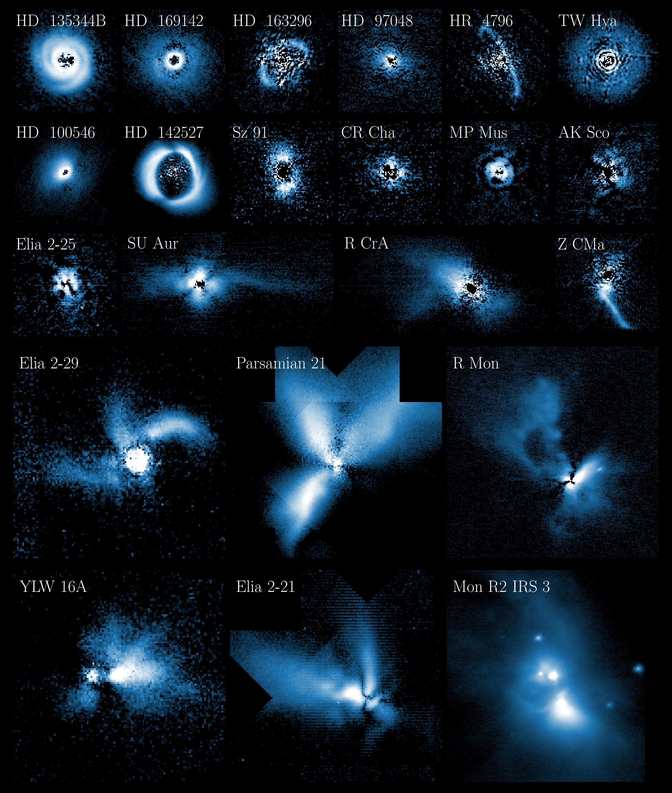

Polarimetric Differential Imaging with VLT/NACO
As my master's thesis research (supervised by Matthew Kenworthy and Christian Ginski), I developed a pipeline to reduce archival VLT/NACO data of young stellar objects using the Polarimetric Differential Imaging (PDI) technique. This technique can distinguish the polarised, scattered light coming from circumstellar dust, from the (much brighter) stellar light. The sub-structures revealed in the circumstellar disks (e.g. rings, gaps, spirals) can tell us more about possibly ongoing planet formation.
A standard reduction pipeline for these NACO data (2003-2019) did not exist. We have published our PIPPIN pipeline, alongside a Zenodo archive of the reduced data products, thus improving their accessibility for future studies.
